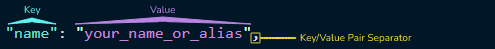
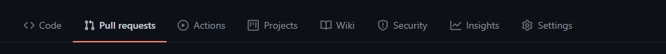

By following the below guide, your actions will have created a card on the Landing page of the project, with some information displayed about you. It's a fun little exercise that gives you the steps to navigate the project and make your first Open Source Contribution to this project (or maybe it is your very first ever!) via Pull Request (PR). 🤜
Any PR satisfying this guide will not be applicable for Hacktoberfest 2022! 🎃🌐💻 Please follow the intermediate.md guide for Hacktoberfest 2022 submissions. 🤜
Get started! Make your first PR and get going into the world of open source!
👇 Participant steps: 👇
1. Project Setup
- Fork the repo. Super simple here, go to the repo , and click on the "Fork" button in the top right of the screen. The window should then refresh, and you should be redirected to your newly created Fork of the project.
-
Go to your preferred IDE/Editor and clone the Forked repo.
- Go to the forked repository in Github. This can be found in your account, under "repositories".
- Hit the green "Code" button, and then click on "HTTPS" and copy the link.
-
-
In your IDE/Editor, open a terminal/command line, and enter the
following:
git clone {insert copied url here}and hit "Enter" on your keyboard. - The Forked repository will now clone to your preferred development method.
- If you are using Gitpod, you do not need to do these steps. Instead, you can go to the forked repository and click on the green "Gitpod" Extension button to open the project for editing.
-
In your IDE/Editor, open a terminal/command line, and enter the
following:
- Your project should already be opened in your preferred IDE/Editor at this point, but just in case. Open your IDE/Editor, and then open the project. 😀
- Before doing any code, lets open a terminal/command line.
-
Set the upstream by running this command
git remote add upstream https://github.com/auxfuse/hackathon-git-labs.git, in your opened terminal/command line.-
We can then check to ensure that the remote has been added correctly
by running
git remote -vin the terminal. And you should get this type of response.
$ git remote -v origin https://github.com/YOUR_USERNAME/hackathon-git-labs.git (fetch) origin https://github.com/YOUR_USERNAME/hackathon-git-labs.git (push) upstream https://github.com/auxfuse/hackathon-git-labs.git (fetch) upstream https://github.com/auxfuse/hackathon-git-labs.git (push)The "origin" in the above snapshot is your Forked repository. The "upstream" is the link we just set so that our newly Forked repository can see the original repository and vice-versa. Lots of thought here, and it does take a bit of getting used to! So stick with it. 🤔💭 Basically all we are doing here, is setting up the relationship between the original repository and the fork. 🤝 Without this step, we can't make a Pull Request.
N.B: If you are using Gitpod, and you open the forked repository using Gitpod this step will be done for you by default. But make sure to double check using the
git remote -vcommand. 😀 -
We can then check to ensure that the remote has been added correctly
by running
- Our last step before we jump into the project is to Create a branch.
- A branch is another layer of security for us to lean on. It's a diverging path from the main branch that exists by default in every repository. Learn more about Branches
-
Inside your terminal/command line in your IDE/Editor, run this
command:
git checkout -b branch-name, replacing the "branch-name" with something more unique to you. - This command creates a branch, and automatically moves you into that branch 😁.
-
Lastly, we need to tell Git that this new branch is to be the current
tracked branch. Back into our terminal, we now run:
git push -u origin branch-name. 🌿🌳
🍴 <-- So what is a fork? It's a copy of the original repository. But one that you own. Any changes you make to the project in the fork won't affect the original. To affect the original, continue following the steps below to make a Pull Request! 😉 Learn more about Forks
All of the initial git setup is done. All in all, if you follow this to the letter, this is a few minutes of work. 😅 Crazy to think of something you do regularly just by muscle memory alone, when viewed in the written word, is quite a lengthy process. 🤯🧠
2. Adding to Project
-
Go to the
community.json file and copy the following JSON
object and replace the values with your own:
{
"name": "your_name_or_alias",
"course_start": "year_of_course_start",
"course_stage": "student_alum_staff_mentor",
"favorite_language": "favorite_language",
"currently_learning": "latest_learning"
}
For reference, the values are on the right side of the colon (:), and are contained inside the double quotes (""). Take a look at this snapshot:
Keep these short and sweet. This is just a small blurb about you as a developer. Anything that exceeds the bounds of the card itself will be truncated.
community.json file. Keeping to the current format. Separate your pasted JSON Object from the last using a comma, (,).- Notice that the JSON objects, those inside the curly braces, and inclusive of the curly braces {}, are separated by a comma. 👈 This part is super important when pasting in your own JSON Object.
- Each individual set of key/value pair inside the JSON objects, are also separated by a comma.
- Keys and values are separated by a colon,
:. With keys on the left of the colon, and values on the right. And both are surrounded by double quotes, (""). - Take note of the following example of a Key/Value pair: 
- After you have added yourself to the
community.jsonfile, you can now view the project in preview mode to see your card added to the website. - Depending on your IDE/Editor of choice, there are a few ways to do this. Most IDEs/Editors will have a built in preview option. If you are unsure, a quick google search on how to do this for your editor is the best course of action.
3. Git and The Pull Request
- Add all your work to the branch using
git add ., using the terminal/command line in your IDE/Editor. - Commit it using
git commit -m "meaningful commit message here". - Push your work using
git push. 👋 And say goodbye to your IDE/Editor for now....because now it's time to go to our Forked Repository in our Github account 💻😁. - At this stage, if you didn't earlier, you might be reminded to set the branch as the current trackable option. In that case just run
git push -u origin branch-name. 🌿🌳 Don't worry, the terminal is very good and will tell you if it needs to be set or not. - Go to the original repo: https://github.com/auxfuse/hackathon-git-labs.
- From here, click on the "Pull requests" tab, located in the top navigational menu of the repository. 
- You should see the following screen:
- As long as you have followed all the steps above to this point, you should see a banner at the top of this screen with a Green Github Button saying "Compare & Pull Request".
- Click on the green button, "Compare & Pull Request" to start the PR process.
- You should see the following, and more so you should see the PR Template information in the "Write" tab.
- On this screen we have multiple things going on, but the main thing is to follow the template and replace the values with your own. - When you are ready, click on "Create pull request". 🎉💥💥🎉
We are almost there!
N.B: If you do not see this, make sure that you have added, commited, and pushed your work to a branch within your forked repository.
4. Closing comments:
And Voila! Well done...you've just added your very first Pull Request. So what happens now?
Now, your PR will go through some simple checks and balances, and if all is satisfied it will be approved and merged by one of a few select Maintainers of this repo.
If there is anything wrong, we will notify you back through the PR itself, which you will get notified via email.😉
This is just the start. Get your PR in, wait for it to be reviewed/approved/merged. And then throw your efforts at adding another PR, but this time following along to the Intermediate guide, and making adding a HTML & CSS Single page creation.
🤜 Thank you! 😀